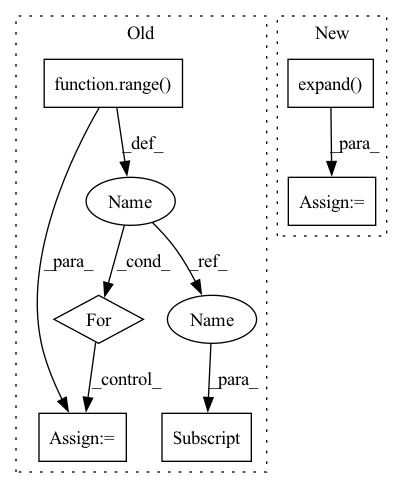

Pattern ID :22302
Before Change
else:
raise ValueError("This similarity is not implemented.")
loss = list()
for i in range( batch_size) :
pos_index = labels == labels[i]
pos_index[i] = 0
neg_index = labels != labels[i]
pos_pair_ = sim_mat[i][pos_index]
neg_pair_ = sim_mat[i][neg_index]
After Change
f"feats.size(0): {feats.size(0)} is not equal to labels.size(0): {labels.size(0)}"
m = labels.size(0)
mask = labels.expand(m, m).t().eq(labels.expand( m, m) ).float()
pos_mask = mask.triu(diagonal=1)
neg_mask = (mask - 1).abs_().triu(diagonal=1)
if self.similarity == "dot":
sim_mat = torch.matmul(feats, torch.t(feats))
elif self.similarity == "cos":
feats = F.normalize(feats)
sim_mat = feats.mm(feats.t())
else:
raise ValueError("This similarity is not implemented.")
pos_pair_ = sim_mat[pos_mask == 1]
neg_pair_ = sim_mat[neg_mask == 1]
alpha_p = torch.relu(-pos_pair_ + 1 + self.margin)
alpha_n = torch.relu(neg_pair_ + self.margin)
In pattern: SUPERPATTERN
Frequency: 4
Non-data size: 6
Instances Fragment ID: 70262579
Project Name: qianjinhao/circle-loss
Commit Name: 55a6035c552f781d6c761475f88b33b8f684fbe7
Time: 2020-04-02
Author: qianjinhao@126.com
File Name: circle_loss.py
M Class Name: CircleLoss
N Class Name: CircleLoss
M Method Name: forward(3)
N Method Name: forward(3)
M Parent Class: nn.Module
N Parent Class: nn.Module
M File Name: circle_loss.py
N File Name: circle_loss.py
M Start Line: 16
M End Line: 40
N Start Line: 17
N End Line: 38
Before Change
with torch.no_grad():
all_updated = []
for pattern_idx in range( len(pattern_features)) :
// permutation is unique for every pattern hence cannot perform vector operations
// Padding is mixed up in the permutation, no need for additional processing
updated_feature = torch.stack([pattern_features[pattern_idx] [i] for i in permutation[pattern_idx]])
all_updated.append(updated_feature)
return torch.stack(all_updated).to(pattern_features.device)After Change
for _ in range(len(pattern_features.shape) - len(permutation.shape)):
extended_permutation = extended_permutation.unsqueeze(-1)
// expand just creates a new view without extra copies
extended_permutation = extended_permutation.expand( pattern_features.shape)
// collect features with correct permutation in pattern dimention
indexed_features = torch.gather(pattern_features, dim=1, index=extended_permutation)
Fragment ID: 70262723
Project Name: maria-korosteleva/garment-pattern-estimation
Commit Name: 66c717b0d59467277210e38e07f0d574af577038
Time: 2021-06-14
Author: mariako@kaist.ac.kr
File Name: nn/metrics.py
M Class Name: ComposedPatternLoss
N Class Name: ComposedPatternLoss
M Method Name: _feature_permute(2)
N Method Name: _feature_permute(2)
M Parent Class:
N Parent Class:
M File Name: nn/metrics.py
N File Name: nn/metrics.py
M Start Line: 903
M End Line: 910
N Start Line: 903
N End Line: 914
Before Change
else:
raise ValueError("This similarity is not implemented.")
loss = list()
for i in range( batch_size) :
pos_index = labels == labels[i]
pos_index[i] = 0
neg_index = labels != labels[i]
pos_pair_ = sim_mat[i] [pos_index]
neg_pair_ = sim_mat[i][neg_index]
alpha_p = torch.relu(-pos_pair_ + 1 + self.margin)
After Change
f"feats.size(0): {feats.size(0)} is not equal to labels.size(0): {labels.size(0)}"
m = labels.size(0)
mask = labels.expand(m, m).t().eq(labels.expand( m, m) ).float()
pos_mask = mask.triu(diagonal=1)
neg_mask = (mask - 1).abs_().triu(diagonal=1)
if self.similarity == "dot":
sim_mat = torch.matmul(feats, torch.t(feats))
elif self.similarity == "cos":
feats = F.normalize(feats)
sim_mat = feats.mm(feats.t())
else:
raise ValueError("This similarity is not implemented.")
pos_pair_ = sim_mat[pos_mask == 1]
neg_pair_ = sim_mat[neg_mask == 1]
alpha_p = torch.relu(-pos_pair_ + 1 + self.margin)
alpha_n = torch.relu(neg_pair_ + self.margin)
Fragment ID: 70262580
Project Name: qianjinhao/circle-loss
Commit Name: 55a6035c552f781d6c761475f88b33b8f684fbe7
Time: 2020-04-02
Author: qianjinhao@126.com
File Name: circle_loss.py
M Class Name: CircleLoss
N Class Name: CircleLoss
M Method Name: forward(3)
N Method Name: forward(3)
M Parent Class: nn.Module
N Parent Class: nn.Module
M File Name: circle_loss.py
N File Name: circle_loss.py
M Start Line: 16
M End Line: 40
N Start Line: 17
N End Line: 38
Before Change
// Filter each sample by its specific repetition
tmp = torch.zeros(num_samples, d, c, device=context.repetition_indices.device)
for i in range( num_samples) :
tmp[i, :, :] = samples[i, :, :, context.repetition_indices[i] ]
samples = tmp
// If parent index into out_channels are givenAfter Change
// Index samples to get the correct repetitions
r_idxs = context.indices_repetition.view(-1, 1, 1, 1, 1)
r_idxs = r_idxs.expand( -1, num_channels, num_features, num_leaves, -1)
samples = samples.gather(dim=-1, index=r_idxs)
samples = samples.squeeze(-1)
// If parent index into out_channels are given Fragment ID: 70262726
Project Name: braun-steven/simple-einet
Commit Name: e657fc668bd0f87f5e622a8b2549cd9e8ade437a
Time: 2022-01-11
Author: steven.lang.mz@gmail.com
File Name: simple_einet/distributions.py
M Class Name: AnonimousClass
N Class Name: AnonimousClass
M Method Name: dist_sample(2)
N Method Name: dist_sample(2)
M Parent Class:
N Parent Class:
M File Name: simple_einet/distributions.py
N File Name: simple_einet/distributions.py
M Start Line: 98
M End Line: 104
N Start Line: 90
N End Line: 109
Before Change
device=samples.device,
dtype=samples.dtype,
)
for sample_idx in range( context.num_samples) :
// Get correct repetition
r = context.repetition_indices[sample_idx]
// Get correct parent_indices
parent_indices_out = parent_indices[sample_idx]
// Get scope for the current repetition
scope = self.scopes[:, :, r]
// Turn one-hot encoded in-feature -> out-feature mapping into a linear index
rnge_in = torch.arange(self.out_features, device=samples.device)
scope = (scope * rnge_in).sum(-1).long()
// Map parent_indices from original "out_features" view to "in_feautres" view
parent_indices_in = parent_indices_out[scope]After Change
// assert (indices_in_tmp == indices_in_gather).all()
indices_in_gather = indices_in_gather.view(num_samples, 1, -1, 1).expand( -1, samples.shape[1], -1, -1)
samples = samples.gather(dim=-1, index=indices_in_gather)
samples.squeeze_(-1) // Remove num_leaves dimension
return samples Fragment ID: 70262313
Project Name: braun-steven/simple-einet
Commit Name: e657fc668bd0f87f5e622a8b2549cd9e8ade437a
Time: 2022-01-11
Author: steven.lang.mz@gmail.com
File Name: simple_einet/factorized_leaf_layer.py
M Class Name: FactorizedLeaf
N Class Name: FactorizedLeaf
M Method Name: sample(3)
N Method Name: sample(3)
M Parent Class: AbstractLayer
N Parent Class: AbstractLayer
M File Name: simple_einet/factorized_leaf_layer.py
N File Name: simple_einet/factorized_leaf_layer.py
M Start Line: 63
M End Line: 120
N Start Line: 68
N End Line: 147